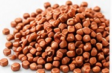
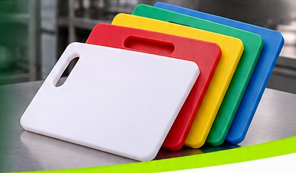

Desarrollamos un compuesto plástico con partículas de cobre integradas en la misma materia prima. Como el cobre está dentro del material y no en una capa superficial, la protección es parte de la pieza.
Nuestro compuesto antibacterial es un proyecto desarrollado por la Universidad de Chile. Los ensayos de laboratorio que respaldan su acción antibacterial también fueron realizados por la Universidad de Chile.
El cobre libera iones que dañan la membrana de bacterias y hongos e impiden que se multipliquen sobre la superficie de la pieza.
Inhibe el crecimiento de bacterias.
Reduce la proliferación de hongos.
Protección permanente en el material.
A diferencia de un recubrimiento superficial, que se desgasta con el roce y el lavado, nuestras partículas de cobre van incorporadas en la materia prima. Por eso la pieza mantiene su protección aunque se raye o se desgaste.

El compuesto se puede aplicar en todo tipo de plástico, a excepción del poliuretano (PU). Como va integrado en la materia prima, lo incorporamos en piezas fabricadas por inyección, extrusión y coextrusión.
Desarrollada en Chile, el país del cobre, para la industria alimentaria, la salud, la minería y los espacios de uso público.
Tablas de corte para la industria alimentaria.
Piezas para plantas de proceso de alimentos.
Superficies y componentes para salud y laboratorios.
Elementos de uso compartido en minería y aeropuertos.
Aplicamos el compuesto en nuestra propia línea de tablas multiuso y tablas para cortar alimentos, pensadas para cocinas industriales, plantas de alimentos y casinos.

Revisa en nuestro catálogo los productos que ya fabricamos con este compuesto:
 Antibacterial
AntibacterialSuperficie antibacterial con cobre incorporado, ideal para uso alimentario.
Ver producto → Antibacterial
AntibacterialCompuesto antibacterial con cobre, diseñado para uso hospitalario.
Ver producto → Antibacterial
AntibacterialSuperficie de apoyo con protección antibacterial permanente.
Ver producto →Es un proyecto desarrollado por la Universidad de Chile, que también realizó los ensayos de laboratorio.
En todo tipo de plástico, excepto poliuretano (PU).
La certificación está en proceso. Los ensayos de laboratorio fueron realizados por la Universidad de Chile.
No se trata de un recubrimiento: el cobre va integrado en la materia prima, por lo que la protección es parte de la pieza.
Desarrollamos productos a medida desde 100 unidades.